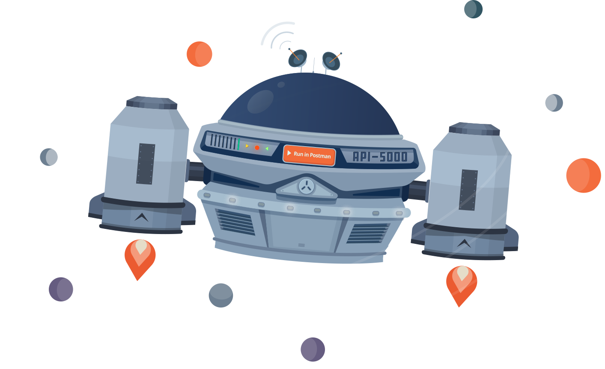

前言

当想要分析一下别人开发的或者自己开发的 RESTful API 时，Postman 是一个很好的工具。Postman 深受开发人员和测试人员的欢迎，因为它提供了一个很好的用户图形界面 （GUI）发送 HTTP 请求，而不必再编写一堆辅助代码。
如果不使用类似 Postman 之类的 API 测试工具时，要验证服务器端 API 返回的响应是否正确，就需要把客户端调用相应 API 的全部代码写出来，人工查看返回结果，并且返回结果如果需要格式化显示或者生成测试报告，就需要更大的工作量。Postman 确保开发人员把主要精力放在真正有价值的特性开发上，而不用为了验证 API 是否正确花费太大的精力。同时也降低了测试人员验证 API 正确性的复杂程度，不用掌握太高深的编程技能也能进行 API 测试。
有了 Postman API 测试变得简单很多。使用 Postman 发送一个 RESTful API 请求只需要选择请求的方法，例如 GET、POST 等，在地址栏 （URL） 栏输入被请求资源的地址，在请求头（HEADERS）填入请求需要的参数，然后选择服务器响应后返回的数据格式，点击发送即可。接收到服务器返回的数据后，Postman 自动解析成易读的 JSON 格式，也可以设置好验证断言，让 Postman 自动验证服务器返回结果是否符合预期。
友情提醒👭
如果您喜欢，请赞赏购买《Postman API 测试与持续集成全栈攻略》完整电子版！购买后请留下您的Email，我们将及时送达您的邮箱！